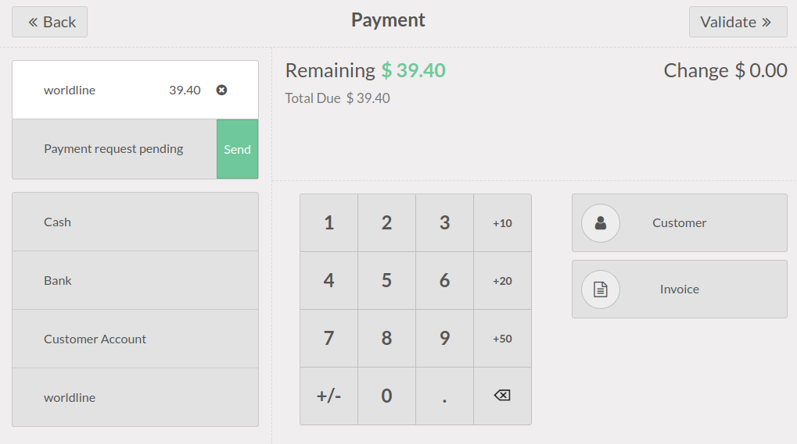

Worldline¶
Conectar una terminal de pago le permite ofrecerle a sus clientes un flujo de pago ágil y facilitar el trabajo de sus cajeros.
Importante
Las terminales de pago Worldline necesitan una caja IoT.
En este momento Worldline solo está disponible en Bélgica, Países Bajos y Luxemburgo.
Odoo es compatible con las terminales de Worldline que utilizan el protocolo CTEP (por ejemplo, las terminales Yomani XR y Yoximo). Si tiene alguna duda, póngase en contacto con su proveedor de pagos para asegurarse de la compatibilidad de su terminal.
Configuración¶
Conectar una caja IoT¶
Conectar una terminal de pago Worldline a Odoo es una función que requiere una caja IoT. Para más información sobre cómo conectar una caja IoT a su base de datos, refiérase a documentación IoT.
Configurar el protocolo¶
Desde su terminal, haga clic en . Introduzca la contraseña técnica «1235789» y haga clic en . Después, haga clic en . Haga clic en OK tres veces en las siguientes pantallas (ticket de ECR CTEP, ancho del ticket de ECR y conjunto de caracteres). Por último, haga clic en detener tres veces. La terminal se reiniciará de forma automática.
Establecer la dirección IP¶
Desde su terminal, haga clic en . Introduzca la contraseña técnica «1235789» y haga clic en . Después haga clic en (pantalla de configuración física TCP) (pantalla de configuración de cliente TCP).
Por último, configure un nombre de alojamiento y un número de puerto.
Nombre de alojamiento¶
Example
10.30.19.4:8069.Nota
La dirección IP de su Caja IoT está disponible en la base de datos de la aplicación de su caja IoT.
Número de puerto¶
En la pantalla de número de puerto, ingrese 9001 (o 9050 en Windows) y haga clic en (ECR protocol SSL no) . Haga clic en detener tres veces, la terminal se reiniciará de forma automática.
Advertencia
Es necesario agregar una excepción en el firewall para los dispositivos IoT de Windows. Siga las instrucciones adicionales en la documentación de Windows IoT para agregar la excepción al firewall de Windows.
Configure el método de pago¶
Habilite la terminal de pago en los ajustes de la aplicación y cree el método de pago relacionado. Establezca el tipo de diario como Banco y seleccione Worldline en el campo Usar una terminal de pago. Luego, seleccione el dispositivo correspondiente en el campo Dispositivo de terminal de pago.

Ya que haya creado el método de pago, puede seleccionarlo en sus ajustes del Punto de venta. Para hacerlo, vaya a los ajustes del punto de venta, haga clic en Editar y agregue el método de pago en la sección de Pagos.
Truco
Contraseña técnica:
1235789Para contactar al soporte técnico de Worldline, llame al
02 727 61 11y seleccione «comerciante». Su llamada se transferirá al servicio deseado.Configure la terminal de cajero si tiene tanto una terminal de cliente como una de cajero.
Para evitar bloquear la terminal, primero revise la configuración inicial.
Configure una dirección IP fija en el router de su Caja IoT para evitar perder la conexión.
Pagar con una terminal de pago¶
Al procesar un pago, seleccione Worldline como método de pago. Compruebe el importe y haga clic en Enviar. Una vez que el pago tenga éxito, el estado cambia a Pago exitoso.
Una vez que se procese el pago, el tipo de tarjeta que se utilizó y el ID de la transacción aparece en el registro del pago.
Nota
En caso de que haya problemas de conexión entre Odoo y la terminal de pago, fuerce el pago al hacer clic en Forzar terminación, lo cual le permite validar la orden. Esta opción solo está disponible después de recibir un mensaje de error que indique que la conexión falló.
Para cancelar la solicitud de pago, haga clic en Cancelar.